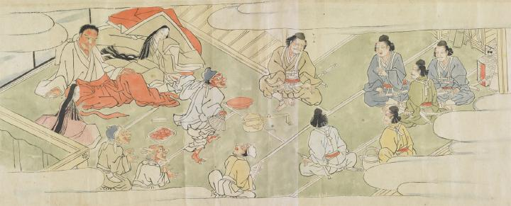

酒天童子と頼光との酒宴。配下の鬼が扇を持って踊り、周囲がそれを囃している。酒天童子はしたたかに酔い、姿勢を崩している。
出典：親書誌：U426_nichibunken_0079：酒天童子絵巻；シュテンドウジエマキ／日付：2006／資源識別子：U426_nichibunken_0079_0006_0000
Copyright (c)2010- International Research Center for Japanese Studies, Kyoto, Japan. All rights reserved.